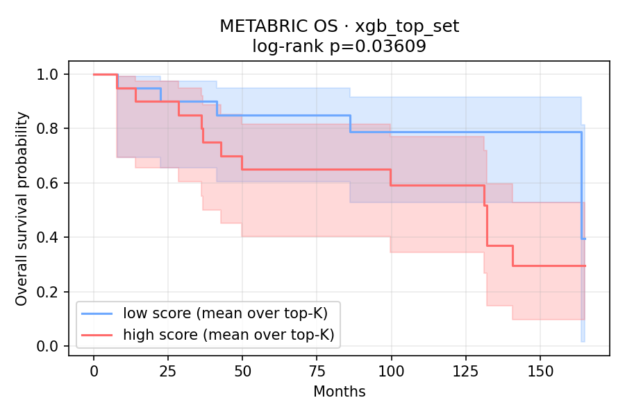
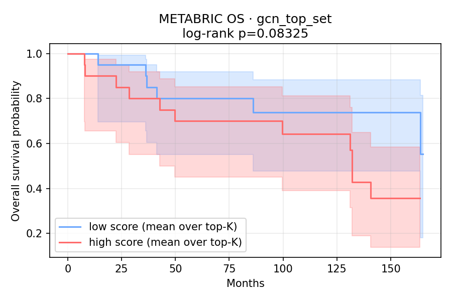
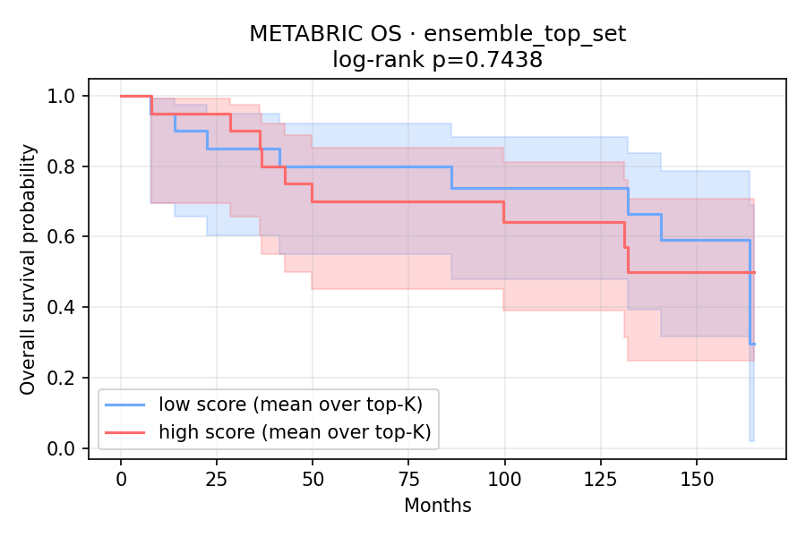
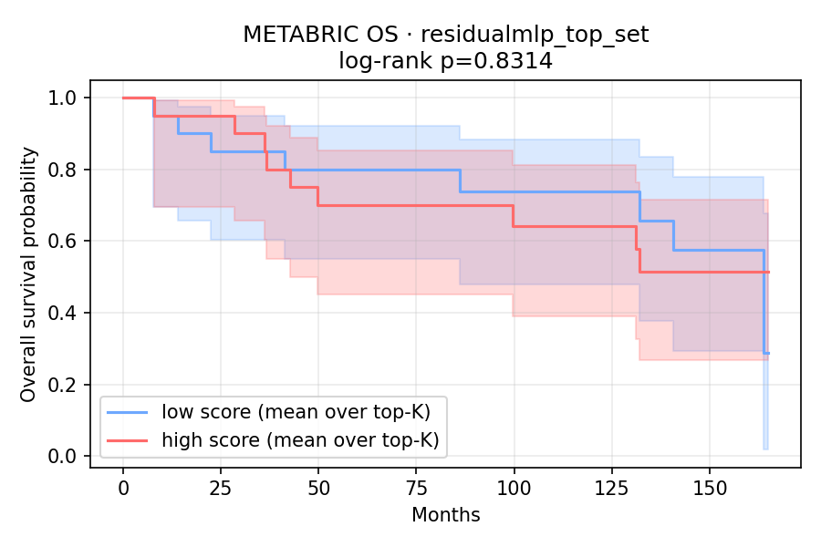

외부 코호트 관점 정리 대시보드 (20260402 v2). §2는 실제 METABRIC OS 등을 쓴 Survival-linked 축이고, §3–§5는 점선 박스로 표시한 proxy 기반 보조 분석(METABRIC-like 정렬·native 랭킹 맥락·ADMET proxy 게이트)입니다. 약물 반응 라벨의 “정답 맞추기” 외부 검증과는 목적이 다릅니다.
로컬: 저장소 루트에서 python3 serve_dashboards.py 후 /metabric_admet_survival_dashboard_20260402_v2.html 로 접속.
metabric_survival_validation_summary.csv, metabric_survival_validation_report.json, km_plots/ — 수치·플롯은 §2에 정리합니다.실제 METABRIC OS 축. 출처: …/metabric_survival_validation/metabric_survival_validation_summary.csv. 각 모델 점수로 뽑은 top-10 약물 집합에 대해, 샘플별 해당 모델 예측의 평균으로 high/low(중앙값 분할)를 정의하고 OS와 비교. 약물 반응 라벨 검증이 아님.
| model top set | log-rank p | Cox HR (high vs low) | Cox p | 해석 요지 |
|---|---|---|---|---|
XGB pred_xgb | 0.036 | 2.55 | 0.036 | 이 서브셋·정의 하에서 high 점수군의 위험(hazard)이 더 높게 추정됨(탐색). XGB는 샘플 내 약물별 예측이 동일한 경우가 많아 사실상 “샘플별 XGB 점수” 분할에 가까울 수 있음. |
GCN pred_gcn | 0.083 | 2.20 | 0.082 | 같은 설계에서 중간적 유의 수준; 인과 해석 금지. |
Ensemble ensemble_score | 0.744 | 1.15 | 0.735 | 이번 분할에서는 생존 차이 신호 약함. |
ResidualMLP pred_residualmlp | 0.831 | 1.10 | 0.825 | 유의 차이 없음에 가까움. |
모델 비교 요약: 동일 파이프라인·동일 n에서 log-rank p가 가장 작은 것은 XGB top set이었습니다. 다만 표본·다중비교·분할 정의에 민감하므로 확증 연구 없이 순위만 강조하지 말 것.
위 표는 생존(survival)과 강하게 정렬된 METABRIC 쪽 입력·라벨 체계에서 나온 결과로 읽는 것이 타당합니다. 그 설정에서는 임상 유사(clinical-like) 신호에 민감한 XGB가 상대적으로 유리한 log-rank·Cox 수치를 받은 것으로 해석할 수 있습니다.




출처: results/features_nextflow_team4/fe_re_batch_runs/20260402/sagemaker_dual_validation/metabric_validation_summary.csv. Top100 unique drug의 모델 점수를 외부 sample pair에 투영한 평가(METABRIC-like 코호트). 신뢰도 C(프록시) — SageMaker 대시보드 §4.5와 동일 전제.
| model | n_pairs | RMSE | MAE | Spearman |
|---|---|---|---|---|
| XGBoost | 2648 | 7.129 | 7.004 | −0.071 |
| ResidualMLP | 2648 | 3.321 | 3.125 | −0.056 |
| GCN | 2648 | 1.273 | 0.914 | 0.404 |
| Ensemble_v2 | 2648 | 2.701 | 2.370 | 0.074 |
운영 기준 랭킹: …/native_pair_features_run/metabric_native_ensemble_ranking_no_lincs.csv (피처: metabric_native_pair_features_no_lincs.parquet). with-LINCS native 랭킹은 비교·감사용. 상세는 DL 대시보드 §0b.
이번 post-analysis 파이프라인에서 Top100 후보에 대해 score-based proxy rule로 1차 스크리닝을 적용했습니다. 분자 구조에 직접 join된 ADMET 테이블이 없을 때의 임시 게이트이며, 임상·합성 전에는 direct molecular ADMET가 필요합니다.
| 항목 | 수치 | 의미 |
|---|---|---|
| 평가 후보 규모 | Top100 unique drugs | 앙상블 v2 랭킹 상위 고유 약물 집합 |
| ADMET proxy 통과 | 53 / 100 | 규칙을 모두 만족한 후보 비율(프록시) |
| Final shortlist | 30 | 통과자 중 rank 유지로 잘린 운영 후보 리스트 |
| 산출물 | admet_filter_log.json, final_shortlist.csv (results/…/fe_re_batch_runs/20260331/sagemaker_final_three/ 등 post-analysis 경로와 동일 흐름 — SageMaker 대시보드 §4.3) | |
모델별 ADMET 수치? ADMET는 약물(화합물) 단위 게이트라서 모델마다 별도의 “ADMET 점수”가 있는 형태가 아닙니다. 대신 shortlist 각 행에 모델 예측(pred_xgb, pred_residualmlp, pred_gcn)과 admet_pass가 함께 있어, “어떤 모델 점수 프로파일의 약물이 통과했는지”를 표로 볼 수 있습니다(SageMaker 대시보드 §4.3 미리보기 표 참고).
① SageMaker 3모델 학습·로컬 앙상블 → ② Survival-linked relevance(실제 OS, §2) → ③ METABRIC-like proxy 정렬 평가(§3) → ④ METABRIC-native no-LINCS 랭킹 맥락(§4) → ⑤ ADMET proxy 게이트·shortlist(§5, SageMaker §4.3과 동일 흐름). §3은 “proxy 라벨과의 일치”, §2는 “OS와의 탐색적 연관”이라 질문이 다릅니다.